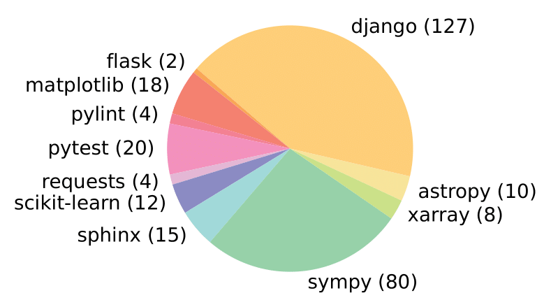
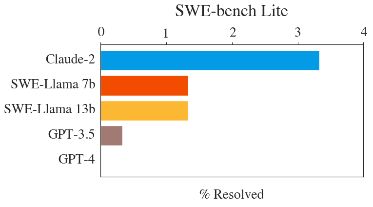

SWE-bench was designed to provide a diverse set of codebase problems that were verifiable using in-repo unit tests. The full SWE-bench test split comprises 2,294 issue-commit pairs across 12 python repositories.
Since its release, we've found that for most systems evaluating on SWE-bench, running each instance can take a lot of time and compute. We've also found that SWE-bench can be a particularly difficult benchmark, which is useful for evaluating LMs in the long term, but discouraging for systems trying to make progress in the short term.
To remedy these issues, we've released a canonical subset of SWE-bench called SWE-bench Lite. SWE-bench Lite comprises 300 instances from SWE-bench that have been sampled to be more self-contained, with a focus on evaluating functional bug fixes. SWE-bench Lite covers 11 of the original 12 repositories in SWE-bench, with a similar diversity and distribution of repositories as the original. We perform similar filtering on the SWE-bench dev set to provide 23 development instances that can be useful for active development on the SWE-bench task. We recommend future systems evaluating on SWE-bench to report numbers on SWE-bench Lite in lieu of the full SWE-bench set if necessary. You can find the source code for how SWE-bench Lite was created in SWE-bench/swebench/collect/make_lite.
Here's a list of the general criteria we used to select SWE-bench Lite instances:
You can download SWE-bench Lite and its baselines from Hugging Face Datasets:

SWE-bench Lite distribution across repositories. Compare to the full SWE-bench in Figure 3 of the SWE-bench paper.
SWE-bench Lite performance for our baselines. Compare to the full SWE-bench baseline performance in Table 5 of the SWE-bench paper.